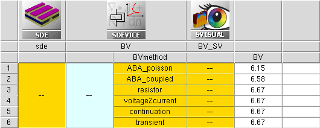

Sentaurus Device
11. Special Focus: Device Electrical Breakdown Simulation
11.1 Overview
11.2 Comparison of Breakdown Methods
11.3 Approximate Breakdown Analysis
11.4 Ionization Integrals With Carriers Analysis
11.5 External Resistor Method
11.6 Voltage-to-Current Boundary Condition Switching Method
11.7 Continuation Method
11.8 Transient Method
11.9 Tracking Additional Data in the Current File
11.10 Driving Force for Avalanche Generation and High-Field Saturation Models
Objectives
- To demonstrate how to perform device electrical breakdown simulations in Sentaurus Device for a 2D NMOSFET device, operating in the off-state regime.
11.1 Overview
In general, device breakdown simulations and off-state device breakdown simulations, in particular, are often difficult perform. In the prebreakdown regime, a current is small and almost constant or, at least, relatively flat. In this case, a voltage-controlled bias sweep works best. In the postbreakdown regime, however, even a small voltage change can lead to a huge current increase, so that sometimes even a snapback can occur due to the dominance of the avalanche generation term in that regime.
Different breakdown methods are available in Sentaurus Device, each having certain advantages for a particular device operation regime.
11.2 Comparison of Breakdown Methods
Table 1 lists the methods suitable for device electrical breakdown simulations and briefly compares their advantages and disadvantages in terms of simulator performance, accuracy, and applicability.
| Method | Advantages | Limitations |
|---|---|---|
| Approximate breakdown analysis | Fast; it does not consume much memory since it requires only the Poisson analysis. Qualitatively produces reasonable results. | Can be applied only to off-state breakdown problematics, where currents are still negligibly small. Quantitatively not very precise; usually underestimates a breakdown. |
| Ionization integrals with carriers analysis | Similar to approximate breakdown analysis in terms of ionization integrals computation. This method solves the entire carrier transport task, having the avalanche term deactivated in the right-hand side of the continuity equation, but computed in a postprocessing step. | Requires educated guess from user to decide when to stop a simulation. |
| External resistor method | Simulation is performed in one effort with the bias applied through an external resistor connected to a device electrode in series. | Requires user intervention or iterations to establish a load resistor. Simulation might not converge if the device goes into snapback. |
| Voltage-to-current boundary condition (BC) switching method | Flexible method for most complicated curve shapes, including curves with negative differential resistance behavior. | Sensitive to a chosen time step at the voltage-to-current BC switching point. |
| Continuation method | Automatically defines the external load resistance by monitoring the curve slope. | Sensitive to grid quality and linear solver settings. Does not like noisy currents. Can be more computationally expensive than other methods. |
| Transient method | Similar to the external resistor method, but uses the transient bias ramp instead of quasistationary. Useful in cases where traps are considered or a simulated structure includes floating semiconductor regions. | Same as the external resistor method. Since a bias ramp time can potentially affect the results, the transient method should be used with care. |
The complete project that demonstrates these breakdown methods and focuses on a MOSFET off-state breakdown simulation can be investigated from within Sentaurus Workbench in the directory Applications_Library/GettingStarted/sdevice/BVmethods.
The BVMethods project parameter value decides which method to use for a breakdown simulation. After project preprocessing in Sentaurus Workbench, the corresponding command inputs are generated.
To visualize characteristic curves, select the Sentaurus Visual nodes of interest, and click the Visualize Selected Nodes Together toolbar button (see Section 2.7 Visualizing Selected Nodes Together).
Click to view the primary file BV_des.cmd.
11.3 Approximate Breakdown Analysis
Approximate breakdown analysis (ABA) is an inexpensive alternative to the breakdown simulations performed with the drift-diffusion or hydrodynamic transport models. Its main advantages are:
- Is fast and less memory and CPU expensive, since it requires only the Poisson equation to be solved.
- Predicts breakdown trends in the case of doping and geometry variations.
- Has no problem with floating semiconductor regions.
- Tolerates coarse grids.
- Can be used in combination with the drift-diffusion or hydrodynamic carrier transport models.
On the other hand, its applicability is limited by the following factors:
- This method considers constant quasi-Fermi potentials. Therefore, it can be applied only to (quasi-)equilibrium conditions assuming no current flow. This limits ABA to off-state and low-current condition device simulations only.
- This method usually underestimates a breakdown because phenomena such as carrier recombination, tunneling, surface scattering, and high-field carrier velocity saturation are not accounted for.
11.3.1 Math Section
Math {
Extrapolate
Iterations=20
Notdamped =100
RelErrControl
ComputeIonizationIntegrals ( ) BreakAtIonIntegral(1 1.1) }
To activate ABA, you must specify ComputeIonizationIntegrals to switch on the computation of the ionization integrals along various ionization paths.
By default, Sentaurus Device reports only the path with the largest value. With the addition of the keyword WriteAll, information for all computed ionization paths, according to the selected strategy, are written into the log file.
The keyword BreakAtIonIntegral terminates the quasistationary simulation when the specified number of integrals (1, in the example) is greater than the specified value (1.1, in the example).
Having an integral value higher than unit indicates that the avalanche condition is reached (at least one extra electron–hole pair is generated).
11.3.2 Physics Section
Physics {
Recombination(
Avalanche(ElectricField)
)
Fermi }
To enable carrier generation under ABA, the Avalanche model must be switched on within the Recombination statement, with the ElectricField specification for the driving force.
11.3.3 Plot Section
Plot {
eIonIntegral hIonIntegral MeanIonIntegral eAlphaAvalanche hAlphaAvalanche
}
To plot the electron- or hole-associated and mean ionization integrals, the keywords eIonIntegral, hIonIntegral, and MeanIonIntegral are specified in the Plot section. To plot the integral quantities, they are saved automatically in the .plt file under the names PhiElectron and PhiHole.
11.3.4 Solve Section
Solve {
*- Build-up of initial solution:
Coupled(Iterations=100){ Poisson }
Coupled { Poisson Electron Hole }
Quasistationary(
InitialStep=@<1e-2/100>@ Increment=1.41
MinStep=@<1e-5/100>@ MaxStep=0.025
Goal{ Name="drain" Voltage=_Vdd_ }
) { Coupled { _EQUATIONSET_ } }
}
To calculate the ionization integrals in ABA, it is sufficient to solve only the Poisson equation along the drain bias sweep. Therefore, the _EQUATIONSET_ macro in the project tool input for this method is defined as:
#define _EQUATIONSET_ Poisson
Figure 1 shows the results of the ionization integrals computation as a function of the applied bias. The blue curve is the electron ionization integral (PhiElectron in the .plt file) and the red curve is the hole ionization integral (PhiHole in the .plt file). The arrow indicates the breakdown bias condition, where both ionization integrals exceed 1.
{kind=link}
Figure 1. MOSFET off-state breakdown simulations performed with ABA. Electron and hole ionization integrals are shown as a function of the drain bias for Vgs = 0. The breakdown is estimated as a point where either of the ionization integrals exceeds the unit value as indicated by the arrow. (Click image for full-size view.)
11.3.5 Ionization Integral Path Search Options
Depending on the details of the device design, it is generally not known which ionization path will contribute the most to breakdown. Therefore, Sentaurus Device offers different strategies to generate the initial set of elements from which the path search starts. The strategy is selected by one of the options to the ComputeIonizationIntegrals section:
- ComputeAtMaxElectricField:
The path search starts from the element having the maximal electric field within a semiconductor region. This method is the fastest since only one path is evaluated at every bias point, but it is also the least accurate. In some circumstances, it might also miss the path that contributes the most to breakdown. - ComputeAtMaxElectricField(delta=<value>):
All elements within a semiconductor region, where the electric field exceeds the maximal electric field minus delta, are taken into the initial element list. This is the default option with delta=1e4 V/cm. - MinElectricField=<value>:
All elements within a semiconductor region, where the electric field is higher than MinElectricField, are taken into the initial element list. MinElectricField is given in V/cm. A recommended value is approximately 250 kV/cm. - ComputeAll:
All elements within a semiconductor region are taken into the initial element list. This method can result in excessive computation time in structures with a large number of elements.
In addition to the electric field–based restrictions for the initial element search, geometric restrictions can be imposed by specifying a Window in the ComputeIonizationIntegrals section. Only elements with center positions within the specified geometric shapes defined in Window are considered for the path search. You can specify the following geometric shapes:
- Cuboid(corner1=<vector> corner2=<vector>): corner1 and corner2 are the diagonally opposite corners of the cuboid.
- Sphere(center=<vector> radius=<float>): center is the vector to the center of the sphere, and radius is the radius of the sphere.
- Cylinder(center1=<vector> center2=<vector> radius=<float>): center1 and center2 are vectors to the circular bases of the cylinder, and radius is the radius of the bases of the cylinder.
While the ionization path must start from an element within the Window, the path itself can extend beyond the geometric element.
The ionization path will stop when the electric field becomes too small and no longer contributes to the ionization integral. This value (default 1 V/cm) can be adjusted with the PathSearchStopField parameters in the ComputeIonizationIntegrals section.
11.3.6 Boundary Conditions for ABA Method
By default, the ABA method follows the same boundary conditions specified for the device solution:
- The default boundary condition in Sentaurus Device is reflective BC. As such, the
ionization path will also be reflected when it reaches a domain boundary. This can be
switched off with the -PathReflection() keyword in the ComputeIonizationIntegrals
section. It is also possible to have the ionization path reflected at other interfaces
by using one of the following options to PathReflection:
- ReflectAtMaterial=<material>: The path is reflected at the interface to the defined materials. Elements inside the specified materials are excluded from the initial element list.
- ReflectAtRegion=<region>: The path is reflected at the interface to the defined regions. Elements inside the specified regions are excluded from the initial element list.
- If periodic boundary conditions are specified in Sentaurus Device, then the ABA method will also use periodic BCs, and the path wraps around the domain boundary where the periodic BCs are specified.
Periodic boundary conditions and path reflection cannot be used simultaneously. Therefore, path reflection is switched off automatically if periodic boundary conditions are used.
11.4 Ionization Integrals With Carriers Analysis
Ionization integrals with carriers (IIC) analysis follows the concept of ABA by computing the ionization integrals along a bias sweep, but quantitatively it is more precise than ABA because it solves the entire system of carrier transport equations and computes the ionization integrals in a postprocessing mode based on a given driving force specification for the avalanche model.
At the same time, the corresponding avalanche generation rates are excluded from the carrier continuity equations, even if the model is activated in the Physics section, and the decision when to stop a simulation is defined by either the given Goal value (see Section 11.4.4 Solve Section) or the BreakAtIonIntegral criterion (see Section 11.4.3 Math Section).
Such an approach can be applied to a large number of electrical breakdown simulation tasks, including 3D device simulations.
The same Electrode section description is used for IIC analysis as for ABA.
11.4.1 Physics Section
Physics {
EffectiveIntrinsicDensity( OldSlotboom )
Mobility(
DopingDep
HighFieldsaturation( GradQuasiFermi )
Enormal
)
Recombination(
SRH( DopingDep )
Band2Band(Model= NonLocalPath)
Avalanche( GradQuasiFermi )
)
Fermi }
The typical physical model description is applied with IIC analysis. Even if the avalanche model is switched on, it will be ignored by activating the AvalPostProcessing keyword in the Math section (see Section 11.4.3 Math Section). However, for the avalanche coefficient computation, the driving force, as specified as a parameter of the Avalanche model, will be used (the default GradQuasiFermi is used in this example).
11.4.2 CurrentPlot Section
CurrentPlot {
ImpactIonization (Integrate(Semiconductor))
}
This section provides instructions to integrate the computed avalanche generation rate over the entire silicon domain and to save the computed quantity into the .plt file for each bias ramp step. This can be used further to extract the breakdown voltage (see Section 11.4.5 Breakdown Voltage Extraction).
11.4.3 Math Section
Math {
ComputeIonizationIntegrals ( )
BreakAtIonIntegral(1 1.1)
AvalPostProcessing }
In addition to ComputeIonizationIntegrals, which activates the impact ionization computation in a postprocessing mode, the keyword AvalPostProcessing instructs Sentaurus Device to exclude the avalanche generation term from the self-consistently solved carrier transport equations.
However, the carrier generation due to the carrier impact ionization is still computed in a postprocessing step and, together with ionization integrals, can be plotted in Sentaurus Visual for further analysis.
11.4.4 Solve Section
Solve {
*- Build-up of initial solution:
Coupled(Iterations=100){ Poisson }
Coupled { Poisson Electron Hole }
Quasistationary(
InitialStep=@<1e-2/100>@ Increment=1.41
MinStep=@<1e-5/100>@ MaxStep=0.025
Goal{ Name="drain" Voltage=_Vdd_ }
) { Coupled { _EQUATIONSET_ } }
}
To compute the ionization integrals with IIC analysis, the entire set of carrier transport equations must be solved. Therefore, the _EQUATIONSET_ macro in the project tool input for this method is defined as:
#define _EQUATIONSET_ Poisson Electron Hole
The target drain bias is given by the _Vdd_ macro definition:
#define _Vdd_ 100.
whose value should be higher than the actual breakdown voltage. The decision as to when to stop a simulation is based on the BreakAtIonIntegral criterion specified in the Math section.
11.4.5 Breakdown Voltage Extraction
The breakdown voltage is estimated by looking at the avalanche current component, which is computed from the integral value of the avalanche generation rate, plotted according to the statement provided in the CurrentPlot section (see Section 11.4.2 CurrentPlot Section). For each bias condition, the avalanche generation current is computed. The point where its value exceeds the value of the conduction current is recognized as a breakdown point (see Figure 2).
{kind=link}
Figure 2. Currents computed with IIC analysis. The blue curve shows the conduction current, directly computed by Sentaurus Device. The red curve indicates the portion of the current due to the avalanche generation only, computed in a postprocessing step. The breakdown is estimated as a point where these two currents meet. (Click image for full-size view.)
11.5 External Resistor Method
A simple but effective way to switch from a prebreakdown voltage-controlled sweep to a postbreakdown current-controlled sweep is to attach an appropriate resistor to an electrode. The resistor value should be large enough such that, in the postbreakdown regime, most of the applied voltage drops across the resistor. The combination of the resistor + voltage source then acts effectively as a current source.
A simple way to establish the value of the resistor is to make a test run without an external resistor. In general, the simulation fails to converge near the onset of breakdown or shortly after. Divide the applied voltage by the obtained electrode current and use a resistor value of the order of V/I.
For most breakdown simulation tasks, the external resistor method provides the most reliable solution and can be recommended, despite its tendency to be the slowest of all the methods discussed in this section.
11.5.1 Electrode Section
Electrode {
{ Name="drain" Voltage=0.0 Resistor= 1e7 }
{ Name="source" Voltage=0.0 }
{ Name="gate" Voltage=0.0 Barrier= -0.55 }
{ Name="substrate" Voltage=0.0 }
}
In the Electrode section, the series resistor is attached to the drain electrode. The value of 107 Ω is determined by the test run as previously mentioned.
11.5.2 Math Section
Math {
Extrapolate
Iterations=20
Notdamped =100
RelErrControl
AvalDerivatives
ErrRef(Electron)=1.e10
ErrRef(Hole)=1.e10
BreakCriteria{ Current(Contact="drain" AbsVal=_Idmax_) }
}
The keyword AvalDerivatives improves robustness for breakdown simulations. It includes derivatives with respect to the avalanche generation rates into the Jacobian matrix. Do not use this option if the impact ionization model is not activated since, in that case, the option does not help convergence, but requires a larger memory use and a longer runtime.
The simulation stops when a specified drain current level is reached. In this example, the BreakCriteria statement terminates the bias sweep when the drain current exceeds a value of _Idmax_ = 1.443x10-3 A/μm. _Idmax_ is defined as a local Sentaurus Workbench variable.
11.5.3 Solve Section
Solve {
*- Build-up of initial solution:
Coupled(Iterations=100){ Poisson }
Coupled { Poisson Electron Hole }
Quasistationary(
InitialStep=@<1e-2/100000>@ Increment=1.41
MinStep=@<1e-5/100000>@ MaxStep=0.025
Goal{ Name="drain" Voltage=_Vdd_ }
) { Coupled { _EQUATIONSET_ } }
}
The drain is ramped in the Goal statement up to a specified value, which is much higher than the expected breakdown voltage because, in the postbreakdown regime, most of the voltage drops across the resistor.
When plotting the resulting I–V curve from the external resistor method, use the InnerVoltage value as an argument to obtain the pure voltage drop on a simulated device under investigation.
11.6 Voltage-to-Current Boundary Condition Switching Method
As an alternative to the external resistor method to simulate a device electrical breakdown, you can use the voltage-to-current method, which applies the boundary condition (BC) switch from the voltage BC (Dirichlet) to the current BC (Neumann).
When specifying the switching point, you must ensure that beyond this point the current increases monotonically as shown in Figure 3. Otherwise, the method fails. Note, however, that the voltage can decrease again (snapback).
{kind=link}
Figure 3. For monotonic curve (red), the voltage-to-current BC switching method can be applied to any bias point. For nonmonotonic curve (black), showing negative differential resistance behavior, the voltage-to-current BC switching method can be applied only to the indicated bias, where the current starts to grow monotonically. (Click image for full-size view.)
11.6.1 Electrode Section
Electrode {
{ Name="drain" Voltage=0.0 }
{ Name="source" Voltage=0.0 }
{ Name="gate" Voltage=0.0 Barrier= -0.55 }
{ Name="substrate" Voltage=0.0 }
}
The voltage-to-current BC switching method does not require a specific resistor to be attached to an electrode of interest. If not specified, the default resistor value of 1 mΩ is used.
11.6.2 Solve Section
Solve {
*- Build-up of initial solution:
Coupled(Iterations=100){ Poisson }
Coupled { Poisson Electron Hole }
Quasistationary(
InitialStep=@<1e-2/5.0>@ Increment=1.41
MinStep=@<1e-5/5.0>@ MaxStep=0.025
Goal{ Name="drain" Voltage=6. }
) { Coupled { _EQUATIONSET_ } }
Set ("drain" mode current)
QuasiStationary (
InitialStep=1e-6 Maxstep=0.05 MinStep=1e-9 Increment=1.41
Goal { name=drain current=_Idmax_ }
) { Coupled { _EQUATIONSET_ } }
}
For the MOSFET off-state breakdown regime with the first Quasistationary statement, the drain electrode is first biased up to 6 V. Next, the Set command instructs the simulator to switch from the finally achieved voltage BC to the current BC at the drain electrode.
The Set("drain" mode current) command is used here for demonstration purposes only and can be omitted.
In the next Quasistationary statement, the drain current is ramped up to a value (_Idmax_ = 1.443x10-3 A/μm) specified inside the Goal statement.
{kind=link}
Figure 4. MOSFET off-state breakdown I–V curve as a result of the voltage-to-current BC switching method. Inset: Magnification around the switching point (6 V) shows the adaptive step refinement as specified in the consequent Quasistationary statement. (Click image for full-size view.)
Sometimes, it is not known in advance where to specify a switching point. In this case, it is recommended to ramp up a device bias to as high a value as possible and switch to the current BC only after the voltage BC no longer converges. For example, when a device starts snapping back (that is, inner dV becomes negative).
11.7 Continuation Method
The continuation method enables automated tracing of arbitrarily shaped curves such as breakdown or latch-up. Its implementation is based on a dynamic load-line technique adapting the boundary conditions along the traced curve to ensure convergence.
Because the curve derivative computation is involved in the continuation method, sometimes it can show less stable convergence behavior, compared to the external resistor method or the voltage-to-current BC switching method.
Without user intervention, an external load resistor is connected to a device electrode at which the curve is traced and, therefore, the device is indirectly biased through the load resistance. By monitoring the slope of a traced curve, an optimal BC is determined by adjusting the load line so that it is orthogonal to the local tangent of the curve. The continuation method automatically decides on a BC without prior knowledge of the curve characteristics.
11.7.1 Solve Section
Solve {
*- Build-up of initial solution:
Coupled(Iterations=100){ Poisson }
Coupled { Poisson Electron Hole }
Continuation(
Name="drain" * Curve is traced at this electrode
InitialVStep=0.1 * Initial voltage step
Increment=1.41 Decrement=2
MaxVstep=0.25 * Limits voltage step along curve trace
NewArc
MinVoltage=-0.001 MaxVoltage=100 * Define the I-V window where
MinCurrent=0 MaxCurrent=_Idmax_ * IV curve is traced
Vadapt=2.0 * Up to this voltage, a Quasistationary
* with voltage ramping is used instead
* of continuation
Iadapt=1e-8 * Up to this current, a Quasistationary
* with voltage ramping is used instead
* of continuation
) { Coupled { _EQUATIONSET_ } }
}
The continuation method traces the drain I–V curve automatically according to the specified I–V curve window. MinVoltage, MaxVoltage, MinCurrent, and MaxCurrent define the window where the curve is traced. The value of MaxVstep limits the maximum voltage step along the bias sweep, thereby allowing the curve to look smoother.
The optional keyword NewArc activates an alternative implementation for tracing curves that might improve continuation robustness in many situations.
The keywords Iadapt and Vadapt indicate a threshold current value and a threshold voltage, which must be reached to initiate the continuation method. Below this value, a regular voltage bias ramp is applied. Only one of these options is required. Both limits must be exeeded if specified.
{kind=link}
Figure 5. I–V curve obtained with the continuation method. The arrow indicates the position where the continuation method starts. (Click image for full-size view.)
11.8 Transient Method
In some situations, for example, with a floating semiconductor region present inside a simulated structure or when the dynamic trap occupation by electrons or holes is considered, it is required that a device simulation is performed in transient.
The following sections show how to perform a transient device breakdown simulation for a 2D NMOSFET device.
11.8.1 Electrode Section
In certain cases, having a device bias ramped in the time domain helps to achieve faster and more reliable results for a device breakdown simulation. To do this, time-dependent boundary conditions are used for a specific electrode (drain electrode in this case), with a given list of voltage–time pairs. The initial boundary condition in this case is still defined by a separate "static" voltage whose value is used to compute the initial guess solution.
Electrode {
{ Name="drain" Voltage=0.0 Voltage=(0. at 0., _Vdd_ at _tend_) Resistor= 1e7 }
{ Name="source" Voltage=0.0 }
{ Name="gate" Voltage=0.0 Barrier= -0.55 }
{ Name="substrate" Voltage=0.0 }
}
Here, the first voltage–time pair defines the initial condition from where the transient starts. The second pair, _Vdd_ at _tend_, defines the final time and the goal bias to be reached. Between these, as many voltage–time pairs as needed can be specified, thereby allowing a complex piecewise bias transient ramp to be simulated.
11.8.2 Math Section
Simulations in transient require discretization of the transient equations. Two transient discretization schemes are supported in Sentaurus Device: simple backward Euler (BE) method and composite trapezoidal rule/backward differentiation formula (TRBDF) method.
The composite TRBDF method, a second-order approximation, is used by default in Sentaurus Device. On the other hand, in most cases, the BE method, despite its lower accuracy, is suggested as the method of choice to solve most standard simulation tasks in transient, due to its better performance compared to the composite TRBDF method.
To activate the BE method, use:
Math {
...
Transient= BE
}
The same break criterion, as used in the external resistor method, is used here to terminate the simulation when the given current level is reached.
For all of these methods, linear solution extrapolation is used, which helps to speed up the convergence on a single Newton iteration. However, this is not always the case for transient simulations. The decision to apply or not apply the solution extrapolation can be made individually for each particular case, by switching on or off the Extrapolate keyword in the Math section of the command file.
11.8.3 Solve Section
Solve {
*- Build-up of initial solution:
Coupled(Iterations=100){ Poisson }
Coupled { Poisson Electron Hole }
Transient (
InitialTime= 0. FinalTime= _tend_
InitialStep= @<_tend_*0.1/_Vdd_>@ Increment= 1.41
Minstep= @<_tend_*1e-5/_Vdd_>@ MaxStep= @<_tend_/100.>@
) { Coupled { _EQUATIONSET_ } }
}
Remembering that a large external lumped resistor is attached to the drain electrode, the _Vdd_ bias is defined as:
#define _Vdd_ 100000.
The _tend_ value defines how fast the drain bias is ramped in time and is defined in seconds:
#define _tend_ 1.
The Transient keyword indicates that the simulation should be performed in transient. All time-related parameter values are given in seconds. Computations performed for InitialStep, MinStep, and MaxStep values reflect the fact that a large lumped resistor is attached to the drain electrode, and a large bias is applied to the drain electrode accordingly.
When plotting the resulting I–V curve from the transient method, use the drain InnerVoltage value as an argument to obtain the pure voltage drop on a simulated device under investigation.
The additional displacement current component \(\bo J_{\bo D} = \bo ε_{\bo 0} · {\bo δ \bo E} / {\bo δ \bo t} \) is computed in transient, which contributes to the integral current value. Therefore, with the faster ramp times, you might expect different results obtained in transient, compared to a steady-state solution. In general, you should double-check whether a certain ramp time value satisfies the task requirement.
However, in this particular example, the breakdown value is not affected by the ramp speed, as shown in Figure 6.
{kind=link}
Figure 6. Resulting I(t) (solid lines) and V(t) (dots) curves obtained with different bias ramp times (from left to right, 1 s, 10 s, 100 s, and 1e5 s). (Click image for full-size view.)
Figure 7 shows the Applications_Library/GettingStarted/sdevice/BVmethods project, with the extracted breakdown voltage values obtained with different solution methods.

Figure 7. Sentaurus Workbench project showing the extracted breakdown voltage values for each breakdown method.
Table 2 compares the CPU times for the MOSFET off-state breakdown simulation performed using the different breakdown methods.
| Method | ABA | IIC | External resistor | Voltage-to-current | Continuation | Transient |
|---|---|---|---|---|---|---|
| CPU time [s] | 35 | 77 | 160 | 209 | 155 | 167 |
11.9 Tracking Additional Data in the Current File
As mentioned in Section 11.4.2 CurrentPlot Section, the top-level CurrentPlot statement provides a way to write additional scalar data to the current file. Data depending on coordinates can be written.
When writing coordinate-dependent data, the values are interpolated as required. For example, the maxima of the electric field and the impact ionization, and their respective coordinates, can be written to the .plt file with:
CurrentPlot {
ImpactIonization(Maximum(Semiconductor Coordinates))
ElectricField (Maximum(Semiconductor Coordinates))
}
This capability is used in the electrical breakdown simulation in Section 11.8 Transient Method. Figure 8 shows the maximum of the electric field and the maximum of the impact ionization, depending on time.
{kind=link}
Figure 8. Maximum of the electric field (left axis) and the impact ionization (right axis) versus time. (Click image for full-size view.)
Furthermore, it is possible to output averages, integrals, maximum, and minimum of quantities over specified domains. To do this, specify the keyword Average, Integrate, Maximum, or Minimum, respectively, followed by the specification of the domain in parentheses.
A domain can be a region, a material, region and material interfaces, a window (given by coordinates), a doping well, or any of Semiconductor, Insulator, or Everywhere. For example, avalanche generation can be integrated over the silicon material with:
CurrentPlot {
ImpactIonization (Integrate(Semiconductor))
}
This capability is used in the electrical breakdown simulation example with the approximate breakdown analysis provided in Section 11.4 Ionization Integrals With Carriers Analysis. Figure 9 plots the impact ionization rate, integrated over the silicon region, versus drain voltage.
{kind=link}
Figure 9. Integrated impact ionization rate versus drain voltage. (Click image for full-size view.)
11.10 Driving Force for Avalanche Generation and High-Field Saturation Models
Since the process of avalanche generation depends exponentially on the driving force that causes it, Sentaurus Device provides many options for choosing the appropriate driving force model for avalanche generation and also for high-field saturation (HFS) models. The driving force for avalanche generation affects breakdown behavior directly; whereas, the driving force choice for HFS models affects the behavior after breakdown, since the current density in power devices is limited by velocity saturation.
11.10.1 Driving Force for Avalanche Generation
For avalanche generation, Sentaurus Device offers the following driving forces:
- GradQuasiFermi is the default and uses the magnitude of the gradient of eQuasiFermi or hQuasiFermi as the driving force.
- EParallel uses the electric field in the direction of the electron or hole current as the driving force.
- ElectricField is used only for approximate breakdown analysis (see Section 11.3 Approximate Breakdown Analysis).
The driving force for the avalanche model is chosen as following:
Physics {
Recombination(
Avalanche( <drivingforce> )
)
}
When the carrier density is small, the direction of the current vector cannot be well established numerically, leading to large fluctuations in the driving force field. This can result in sudden changes in avalanche generation and, therefore, leads to convergence problems.
11.10.2 Driving Force for Velocity High-Field Saturation Models
For velocity high-field saturation (HFS), Sentaurus Device offers the following driving forces:
- GradQuasiFermi is the default and uses the magnitude of the gradient of eQuasiFermi or hQuasiFermi as the driving force.
- EParallel uses the electric field in the direction of the electron or hole current as the driving force.
- ElectricField uses the magnitude of the electric field as the driving force.
- EParallelToInterface uses the electric field component parallel to the nearest interface as the driving force.
- SqrtEfieldProdGQF uses the square root of the electric field multiplied by the gradient of the quasi-Fermi level as the driving force.
The driving force is chosen in the Physics section:
Physics {
Mobility(
HighFieldSaturation( <drivingforce> )
)
}
As with avalanche generation, EParallel is the most physically accurate model, but it suffers from the same stability problems. ElectricField overestimates the driving force in the channel of a MOS device, since the perpendicular electric field is also taken into account. For MOS channels, EParallelToInterface is a better model, because the current flows primarily parallel to the metal–insulator interface. However, at rounded trench corners where breakdown can occur, this model underestimates the driving force, because there the current flow becomes primarily perpendicular to the interface. As such, GradQuasiFermi offers the best balance between accuracy and robustness in terms of the choice of driving force model.
Note that the choice of the driving force for velocity HFS will have little or no impact on the breakdown voltage (the point where breakdown starts), but it can significantly affect snapdown behavior. Therefore, a careful driving force choice is needed only when snapdown behavior is of interest.
11.10.3 Driving Force Interpolation for Velocity High-Field Saturation and Avalanche Models
Even though GradQuasiFermi offers the best choice for the driving force for HFS models, due to its mathematical nature, it can show instabilities in areas of low-carrier concentration. To overcome these instabilities, Sentaurus Device can be instructed to interpolate from GradQuasiFermi to a different driving force model.
The possibility to interpolate a given avalanche driving force to the electric field at low carrier concentrations, similar to what is described in Section 9.3.2 Nonlinear Solver Controls, is available in Sentaurus Device. It can sometimes improve the simulator convergence behavior.
For the GradQuasiFermi driving force, the following syntax should be used to interpolate it to the ElectricField within regions of small carrier densities:
Math {
RefDens_eGradQuasiFermi_ElectricField_Aval = <refdens>
RefDens_hGradQuasiFermi_ElectricField_Aval = <refdens>
}
where <refdens> is the electron or hole concentration below which this interpolation becomes active.
Alternatively, if the EParallel driving force is used as a driving force, then it can also be interpolated to the ElectricField using the following syntax:
Math {
RefDens_eEParallel_ElectricField_Aval = <refdens>
RefDens_hEParallel_ElectricField_Aval = <refdens>
}
Using these specifications, the driving force interpolation is applied to the avalanche term only.
The driving force interpolation for the velocity high-field saturation model can be applied separately. Different options are available. The first option is to interpolate from GradQuasiFermi to ElectricField:
Math {
RefDens_eGradQuasiFermi_ElectricField_HFS = <refdens>
RefDens_hGradQuasiFermi_ElectricField_HFS = <refdens>
}
where <refdens> is the electron or hole concentration below which this interpolation becomes active.
The second option is to interpolate from GradQuasiFermi to EParallelToInterface:
Math {
RefDens_eGradQuasiFermi_EParallelToInterface_HFS = <refdens>
RefDens_hGradQuasiFermi_EParallelToInterface_HFS = <refdens>
}
Lastly, there is an option to interpolate from EParallel to ElectricField, just like for avalanche generation:
Math {
RefDens_eEParallel_ElectricField_HFS = <refdens>
RefDens_hEParallel_ElectricField_HFS = <refdens>
}
Which of these interpolation options is appropriate for the given structure depends on whether the breakdown behavior occurs primarily in the channel or at a trench corner. In the first case, interpolation to EParallelToInterface is more accurate; whereas in the latter case, interpolation to ElectricField is more accurate.
If no prior information is available about the breakdown location, then the following setup is recommended for a typical power device:
Physics {
Recombination(
Avalanche( GradQuasiFermi )
)
Mobility(
HighFieldSaturation( GradQuasiFermi )
)
}
Math {
RefDens_eGradQuasiFermi_ElectricField_HFS = 1e12
RefDens_hGradQuasiFermi_ElectricField_HFS = 1e12
}
Copyright © 2022 Synopsys, Inc. All rights reserved.